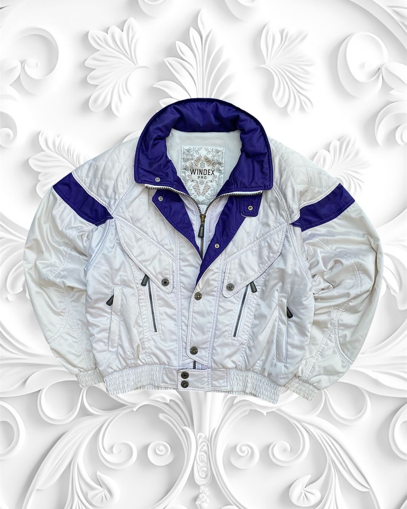
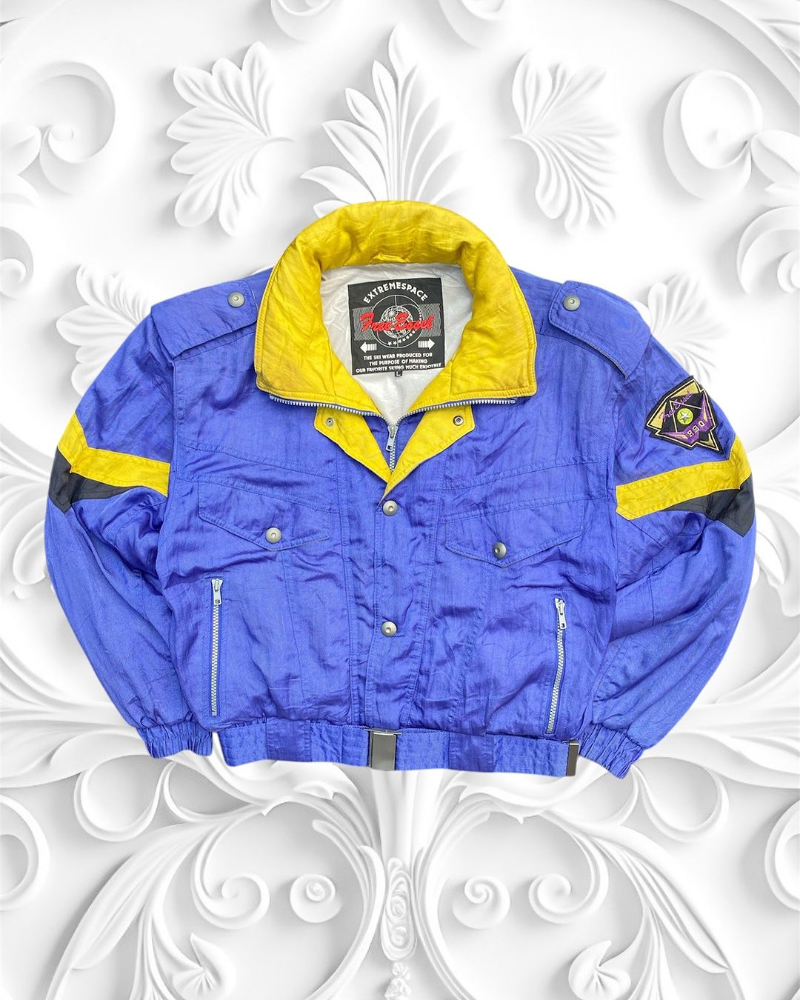
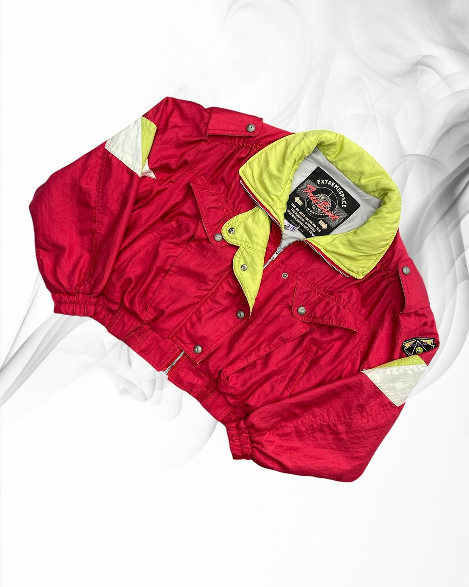
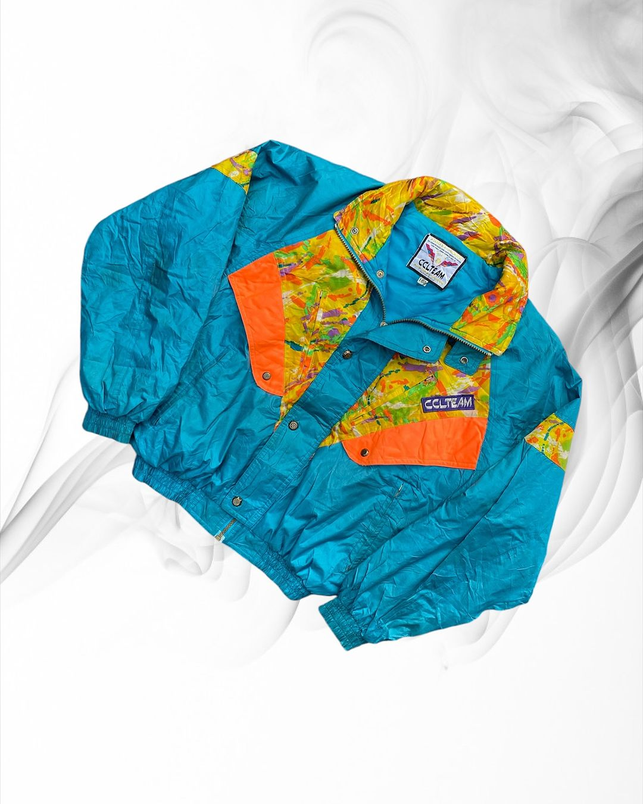

Our Products

Jaket Vintage Killy
Bahan jaket vintage yang umum: Kulit: Tahan lama, klasik. Nylon/Polyester: Ringan, tahan air. Denim: Kasual, retro. Canvas: Kuat, nyaman.Rp 350.000

Jaket Vintage Descente
Bahan lain jaket vintage: Wol: Hangat, cocok untuk dingin. Corduroy: Tekstur retro klasik. Fleece: Lembut, nyaman. Suede: Halus, kesan mewah.Rp 400.000

Jaket Vintage Sparkling
Bahan lain jaket vintage: Tweed: Klasik, sering untuk jaket vintage formal. Parasut: Ringan, tahan air, cocok untuk jaket sporty. Cotton Twill: Kuat, nyaman, sering pada jaket kerja (workwear).Rp 450.000

Jaket Vintage Killy 2
Bahan lain jaket vintage: Velvet: Lembut dan elegan, memberi kesan mewah. Mesh: Berpori, cocok untuk jaket sporty yang ringan. Ripstop: Kuat dan tahan sobek, sering untuk jaket militer.Rp 500.000

Jaket Vintage Killy 3
Bahan lain jaket vintage: Gabardine: Tahan air dan awet, sering dipakai untuk jaket trench vintage. Satin: Halus dan berkilau, memberi tampilan glamor dan klasik. Acrylic: Ringan dan hangat, sering jadi alternatif wol.Rp 550.000

Jaket Vintage Cabin Club
Bahan lain jaket vintage: Spandex: Elastis, sering dicampur untuk kenyamanan ekstra. PVC/Vinyl: Mengkilap dan tahan air, memberi kesan edgy. Terpaulin: Bahan tebal, tahan cuaca, sering dipakai pada jaket motor vintage.Rp 600.000

Jaket Vintage Extreme
Bahan lain jaket vintage: Gabardine: Tahan air dan awet, sering dipakai untuk jaket trench vintage. Satin: Halus dan berkilau, memberi tampilan glamor dan klasik. Acrylic: Ringan dan hangat, sering jadi alternatif wol.Rp 550.000

Jaket Vintage ExtremeSpace
Bahan lain jaket vintage: Gabardine: Tahan air dan awet, sering dipakai untuk jaket trench vintage. Satin: Halus dan berkilau, memberi tampilan glamor dan klasik. Acrylic: Ringan dan hangat, sering jadi alternatif wol.Rp 420.000

Jaket Vintage ExtremeSpace 2
Bahan lain jaket vintage: Gabardine: Tahan air dan awet, sering dipakai untuk jaket trench vintage. Satin: Halus dan berkilau, memberi tampilan glamor dan klasik. Acrylic: Ringan dan hangat, sering jadi alternatif wol.Rp 440.000

Jaket Vintage CLLTEAM
Bahan lain jaket vintage: Gabardine: Tahan air dan awet, sering dipakai untuk jaket trench vintage. Satin: Halus dan berkilau, memberi tampilan glamor dan klasik. Acrylic: Ringan dan hangat, sering jadi alternatif wol.Rp 430.000